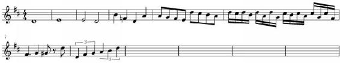
Figure 6.2. Note the whole notes in the first two bars, the half notes in the third bar, the quarter notes in the fourth bar, the eighth notes in the fifth bar, and the sixteenth notes in the sixth bar. Also note the presence of the dotted quarter note at the beginning of the seventh bar, as well as the two sets of triplets in the last bar.
Note durations are represented by the shape of the written note. They occur in simple divisions and are then altered as needed. Here is the way note duration is calculated and represented:
Double whole note
A double whole note (American name) or breve (British name) occupies eight beats, or two full bars in 4/4 time.
Note that there are even longer notes than this, such as longa (four bars) and maxima (eight bars) notes. These are less common but they do exist, as well as their rest equivalents.
Whole Notes
A whole note (American name) or semibreve (British name) occupies four beats, or a whole measure in 4/4 time.
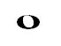
Half Notes
A half note (American) or minim (British) occupies half of the time of a whole note, or two beats (a half-measure in 4/4 time).
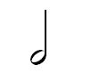
Quarter Notes
A quarter note (American) or crochet (British) occupies half of the time of a half note, or one beat.
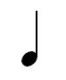
Eighth Notes
An eighth note (American) or quaver (British) occupies half of the time of a quarter note, or one-half beat (one-eighth of a 4/4 bar).
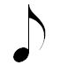
Eight notes and any shorter notes can have their flags “tied” or beamed together (as mentioned before). Two grouped eight notes (equal to one quarter note) look like this:
Sixteenth Notes
A sixteenth note (American) or semiquaver (British) occupies half of the time of an eighth note, or one-quarter beat (one-sixteenth of a 4/4 bar).
When four 16th notes are grouped:
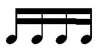
Shorter Notes
Though not used as frequently, notes with shorter values can be generated in the same way – 32nd notes (thirty-second note or demisemiquaver), 64th notes (sixty-fourth note or hemidemisemiquaver), 128th notes and 256th notes. These notes are mainly used for fast and brief sections in slow musical pieces.
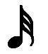
(32nd note)
Grouped variation of 32nd notes would look exactly the same as the 16th notes but with the third horizontal line added on top.
Dots are used to alter the length of a note. A dotted note (a note with a dot next to it) is equivalent to one and a half times the length of the original note. For instance, a dotted eighth note takes up the same time as one eighth note and one sixteenth note combined.
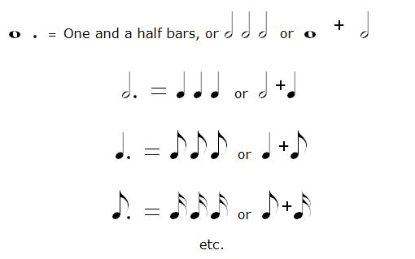
Tuplets are a way of altering the way, temporarily, that a series of notes is counted. The simplest tuplet is a triplet, in which three notes are played during the time it would normally take to play two such notes.
For instance, three quarter note triplets (the most common tuplets) take up 2 beats (while normally two quarter notes would take up 2 beats).
3 quarter note triplets = 2 quarter notes
3 eight note triplets = 1 quarter note
The notes in tuplets are dispersed evenly over the interval in question, effectively creating a temporary polyrhythm.
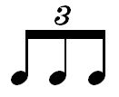
It is possible to create tuplets other than triplets, such as pentuplets, but these are far less common, due in part to their difficulty and in part to their oddness.
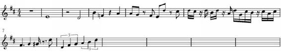
Figure 6.2.3. Note the rests that have been added to figure 6.2.
Not everything on a page represents a note that you need to play. In fact, much of music is the notes you don’t play. To represent this time, composers use rests. Rests indicate that you should play nothing during a certain time. They are as follows:
Whole Note Rests
Whole note (or semibreve) rests take up the same amount of time as a whole note.
Half Note Rests
Half note (or minim) rests take up the same amount of time as a half note.
Quarter Note Rests
Quarter note rests take up the same amount of time as a quarter note.
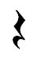
Eighth Note Rests
Eighth note rests take up the same amount of time as an eighth note.
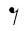
Sixteenth Note Rests
Sixteenth note rests take up as much time as a sixteenth note.
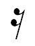
Shorter Rests
Like notes, rests can be divided further – 32nd note rests, 64th note rests, 128th note rests, 256th note rests. In terms of appearance these rests look exactly like 16th note rests but with a new “hook” added (to the two existing ones) each time with every shorter rest.
Dotted Rests
Like notes, rests can be dotted, and the result is the same.
These are two elements that are easy to get mixed up because of their similar musical symbols.
Tie is a rhythmic element of the staff that extends time value of the notes of the same pitch. On the staff, it is a curved line connecting two note heads (the line always connects the note heads which sit on the same line or space) within a bar, or across the bar lines.
Ties have a very similar function as dots. For instance:
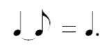
The choice of whether to use a tie or a dot depends upon the time signature which determines our bar.
For example, if we have 2/8 time signature it means that we can only have two eight note beats in one bar. In this case we cannot use dotted quarter note (which is equal to the value of three eight notes) because it would break the rules of the bar (one note that is held for three beats is written in one bar that can have a maximum of two beats – this is not allowed). What we can do however is use a tie and connect the quarter note in the first bar with an eight note in a new bar across the bar line. This doesn’t violate the rules set by the time signature for the bar.
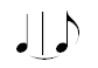
Ties are also often used within a bar to accommodate for the strict and complex rules of note beaming.
Slurs on the other hand are an expressive articulation element of the staff. They indicate that a passage of music should be played smoothly or legato (more is said in the Dynamics and Articulation section). Their symbol looks the same as that of ties; the difference is that the slur’s curved line can connect any two notes positioned anywhere vertically on the staff, within a bar or across even several bars. The line is generally placed below the notes if the stem is positioned upwards or over the notes if the stem is positioned downwards. Any note that is covered by the slur line is meant to be played smoothly, uninterrupted, legato style.
Ties and slurs can be combined, in which case the slurs are written under the phrase, beneath (or above) the ties.